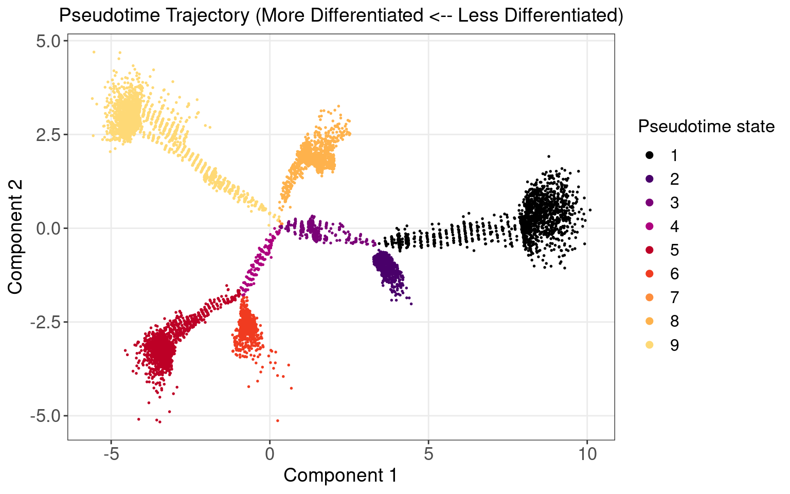
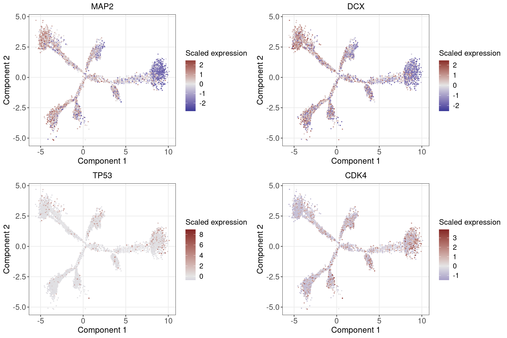
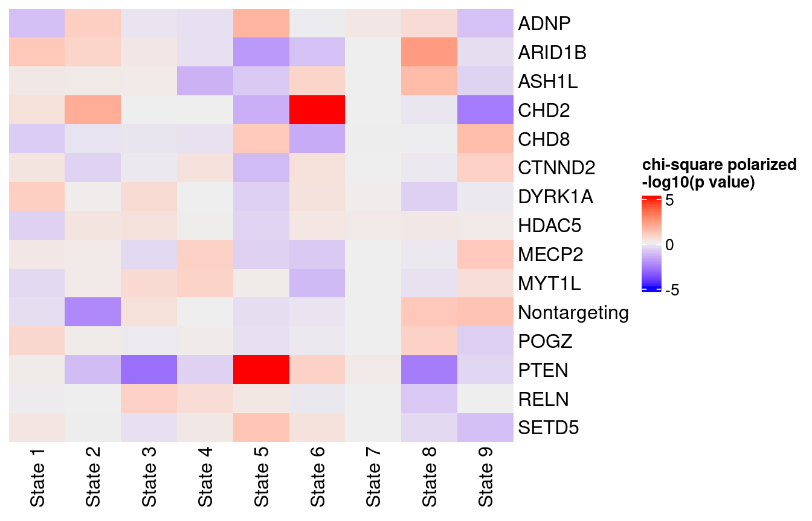

Source:
High-throughput single-cell functional elucidation of neurodevelopmental disease-associated genes reveals convergent mechanisms altering neuronal differentiation, GEO accession: GSE142078.
Perturbations:
CRISPR knock-down of 14 autism spectrum disorder (ASD)–associated genes (3 gRNAs per gene) + 5 non-targeting gRNAs.
Cells:
Lund human mesencephalic (LUHMES) neural progenitor cell line.
Cells from 3 batches were merged together into 1 analysis. All cells have only a single type of gRNA readout.
We attempted to reproduce the pseudotime trajectory of cells as reported in the original paper.

Neuronal markers (MAP2 and DCX) increase along the pseudotime trajectory, whereas progenitor markers (TP53 and CDK4) decrease, consistent with Fig 3B of original paper.

| Factor | Density | Coefficient | P_value |
|---|---|---|---|
| 1 | 0.350 | 1.03000 | 0.00e+00 |
| 2 | 0.180 | -1.09000 | 2.73e-201 |
| 15 | 0.072 | -0.54900 | 6.80e-40 |
| 4 | 0.150 | 0.37300 | 3.07e-17 |
| 18 | 0.031 | -0.31100 | 5.70e-13 |
| 7 | 0.140 | 0.28000 | 1.75e-10 |
| 11 | 0.061 | -0.23800 | 2.04e-08 |
| 8 | 0.130 | 0.17700 | 4.19e-05 |
| 5 | 0.240 | -0.17000 | 9.46e-05 |
| 14 | 0.030 | -0.15000 | 4.45e-04 |
| 19 | 0.047 | 0.13900 | 8.01e-04 |
| 9 | 0.110 | 0.14000 | 1.30e-03 |
| 6 | 0.150 | -0.10000 | 2.52e-02 |
| 3 | 0.035 | 0.08430 | 6.14e-02 |
| 13 | 0.026 | 0.06750 | 1.05e-01 |
| 17 | 0.050 | 0.05740 | 1.65e-01 |
| 10 | 0.012 | -0.05160 | 2.30e-01 |
| 12 | 0.062 | -0.03720 | 3.80e-01 |
| 20 | 0.054 | -0.01160 | 7.74e-01 |
| 16 | 0.077 | -0.00202 | 9.62e-01 |

Pairs of associations that passed chi-square test FDR < 0.05:
3
Perturbations with significant enrichment or depletion in states: CHD2, PTEN